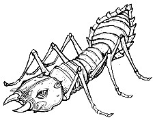

Kitiara, Cupelix'in söylediklerini düşünürken, Wingover esneyerek geminin parmaklığında belirmişti. "Günaydın! Kahvaltı ne zaman?" diye sordu.
"Daha beş saat önce yemek yedin," diye onu azarladı Kitiara. Giysisini ve zırhını tekrar omuzunun üzerine koyuyordu.
Roperig ve Fitter de geminin kapısında duruyorlardı. Roperig'in eli hâlâ çırağının sırtına yapışık duruyordu. "Merhaba, ejderha!" dedi içtenlikle.
"Merhaba!" diye ekledi Fitter.
"İyi uyudunuz mu, küçük dostlarım?" diye sordu Cupelix.
"Çok iyi uyuduk, teşekkürler. Ben– biz dışarı çıkıp temiz hava alabileceğimizi düşündük," dedi Roperig.
"Birbirinizden ayrılmayın," diye onları uyardı Kitiara. Ne zaman siz gnom'lardan biri kendi başına bir şey yapsa, başımız belaya giriyor."
Roperig kaybolmayacaklarına söz verdiğinde Fitter'ın da aynı fikirde olmaktan başka bir şansı yoktu. Obeliskin kapısına doğru ilerlediler. Obeliskin girişinde rüzgarın sesi duyuluyordu.
Kitiara birden bunun Cupelix'in kahkahası olduğunu farketmişti. Buna karşı koyamazdı; küçük kahkahalar artmaya başlamış ve bir süre sonra bunlar gürültülü kahkahalara dönüşmüştü.
* * * * *
Sturm kollarından destek alarak doğruldu ve başını salladı. Kahkahaları duymuştu. Bilinci yerindeydi, ancak hafızası bir sisin içinde sürükleniyor gibiydi. Ayağa kalkarak kahkahanın geldiği yöne döndüğündeyse Roperig ve Fitter yüzünden yere yuvarlandı.
Kitira gnom'ları Sturm'ün üzerinden çekerek onları havaya kaldırdı. "Siz ikinizin neyi var? Sturm'ün burada durduğunu görmediniz mi?"
"Ama–ama–ama," diye kekeledi Fitter.
Kitiara onları salladı. "Tamam, kesin!"
"Bu bir kazaydı. Kit," dedi Sturm, bir kez daha ayağa kalkarak. Zavallı Fitter yeni gücü yüzünden havanın ortasında koşmaktaydı, kısa bacakları hızla dönüyordu. Kitiara gnom'ları yere bıraktı.
"Ağaç-adamlar!" diye bağırdı Roperig. "Dışarıdalar!"
"Ne! Kaç tane?"
"Kendiniz görün!"
Kapıya fırladılar. Sturm dışarı adımını attığında, kırmızı cam bir mızrak ayağının önüne saplandı ve binlerce sivri uçlu kıymığa dönüştü. Kitiara, Sturm'ü kılıcını bağladığı kemerinden tutarak yakaladı ve tek eliyle geriye sürükledi.
"En iyisi arkada kalmak," dedi Kitiara.
"Kendimi tehlikeden koruyabilirim," diyen Sturm sağdaki duvara yaslanarak dışarıyı inceledi. Obeliskin etrafındaki vadi ağaç-adamlarla doluydu, binlercesi vardı. Uğuldamaya başladılar. "Ou-Stoom laud, Ou-Stoom laud."
"Ne diyorlar?" diye sordu Kitiara, Sturm'ün arkasından.
"Ben nereden bileyim? Hemen bütün gnom'ları uyandır," dedi Sturm, Kitiara'ya. "Ben Cupelix'le konuşacağım." Kadın kendisine yardım etmeleri için Roperig, Fitter ve Flash'ı da yanına almıştı.
"Cupelix?" diye seslendi Sturm, çünkü ejderha yine kulenin yükseklerine yok olmuştu. "Cupelix, aşağı in! Dışarıda bir sorun var!"
Sorun ha? Evet, hiç kuşkun olmasın ki epey sorunumuz var!
Pirinç renkli kanatların muazzam sesi duyuldu, ejderha obeliskin bir kenarından diğerine uzanan sütunlardan birinin üzerine konmuştu. Cupelix'in metalik pençeleri tıkırtıyla sütunun üzerine kapandı. Kanatlarını büktü ve gagasıyla tüylerini düzeltmeye başladı.
"Bu olay karşısında fazla rahatsız olmuşa benzemiyorsunuz," dedi Sturm, yumruklarını kalçasının üzerine koyarak.
"Olmalı mıyım?" diye sordu ejderha.
"Obeliskin kuşatılmış olduğunu düşünürsek, evet."
"Lunitari'liler çok akıllı değillerdir. Eğer kendilerine kral yaptıkları o budala ölümlüyü öldürmemiş olsaydınız buraya asla gelmezlerdi."
"Rapaldo deliydi. Gnom'lardan birini öldürdü ve eğer karşı koymasaydık hepsini birden öldürecekti," dedi Sturm.
"Bütün bu yolu sizi öldürmek için geldiklerini bilmeli ve kendini önemli hissetmelisin. Şu tekrar edip durdukları kaba sözcük kümesi– onun ne anlama geldiğini biliyor musun? Sturm ölmeli."
Sturm'ün eli kılıcının kabzasını sıkıca kavradı. "Ben savaşmaya hazırım," dedi yüzünü ekşiterek.
"Sizin ırkınız her zaman savaşmaya hazır. Sakin ol, benim şövalye dostum, ağaç halkı saldırmayacak."
"O kadar emin misiniz?"
Cupelix esnedi, bakır paslı yeşil dişleri ortaya çıktı. "Ben Yeni Yaşamların Koruyucusu'yum. Sadece sert bir travma Lunitari'lileri buraya gelmeye mecbur edebilir. Ancak benimle uğraşacak kadar cesur değillerdir."
"Bizi ablukaya almalarına izin veremezsiniz!" diye diretti Sturm.
"Kısa bir süre sonra güneş batacak ve ağaç halkı köklerini salacak. Micone'ler de uyanacak ve onları uzağa atacak."
"Micone'ler sadece geceleri mi dışarı çıkıyorlar?"
"Hayır, ama güneş ışığında kör olurlar." Cupelix, bir araya topladığı gnom'larla birlikte önüne gelen Kitiara'yı duyunca kulaklarını dikti. Ejderha, Lunitari'lilere karşı güvende olduklarını söyleyerek herkesi rahatlatmaya çalıştı.
"Belki de bir barikat inşa etmeliyiz," dedi Stutts.
"Vaktimizi Bulutların Efendisi'ni onarmak için harcasak çok daha iyi olur, diye düşünüyorum," dedi Sighter. "Rapaldo'nun kalesinden getirdiğimiz hurda metalleri kullanarak birkaç saat içinde gerekli onarımları yapabiliriz."
Birdcall keskin bir nota cıvıldandı. Stutts başını salladı ve "Demiri işlemek için ihtiyacımız olan ateş yok."
"Size bu konuda yardımcı olabilirim," dedi Cupelix. "Ne kadar oduna ihtiyacınız olacak?"
"Bize çok yardımcı oluyorsunuz," dedi Sturm. "Neden?"
Yaratığın gözleri kısıldı. "Hareketlerimi mi sorguluyorsun?" diye sordu. Arkaya yatmış kulaklarıyla oldukça korkutucu gözüküyordu.
"Açıkçası, evet."
Ejderha rahatladı. "Ho, ho! Çok güzel! İlk ben göz kırptım, Efendi Brightblade! Sizden istediğim bir iyilik var, ama ilk önce sizin becerikli geminizi onarmak için çalışmalıyız."
Bir süre sonra obeliskteki ışık dibe çökmeye başlamıştı. Ağaç-adamların bağırışları güneşin ortadan kaybolmasıyla yerini sessizliğe bırakmıştı. Bir müddet sonra obeliskin içi de kararmıştı–
Gnom'lar aletlerini aramak için Bulutların Efendisi'ne yöneldiklerinde Kitiara, Cupelix'e karanlıktan dolayı yakındı.
"Oh, peki," dedi ejderha "Ölümlü gözlerinizin karanlığın en ufak parçasını bile yırtamayacağını unutmuşum." Ejderha kanatlarını uçları duvarlara çarpana kadar açmış ve boynunu bir kuğu gibi eğmişti.
Ah-biray solem! Karanlığın yaratıkları!
Açık renkli ve canlı bir kıvılcım getirin
Kuleyi gündüz gibi aydınlatmak için.
Gelin, Micone'ler! Solem ah-biray!"
Obeliskin zemininde bulunan deliklerden gelen dev karıncaların çıkarttıkları cam şangırtıları birleştiğinde sesler oldukça yükselmişti. Sanki yüzlerce ürkütücü yaratık ayaklarının altındaki her yerde kımıldanıyordu.
Bir şey Sturm'ün bacağına çarpmıştı. Sturm yerdeki deliklerin birinin yanında durmaktaydı ve Micone'lerden biri başını delikten çıkartıp Sturm'e anteniyle dokunmuştu. Sturm irkilirken dev karınca dışarı çıktı, sonra ardından başkaları da gelmeye başladı.
Obelisk bir anda Micone'lerle dolmuştu, hepsi de şangırdıyor ve nazikçe kristal antenlerini sallıyorlardı.
"Yerlerinize, hayvanlarım," diye emretti Cupelix.
Duvara yakın olan karıncalar en alçakta bulunan kaya tabakalarına tırmanarak oraya asıldılar. Geniş, erik şeklindeki karınları kayanın ucunda dengelenmişti. Bütün antre asılı karınca vücutlarıyla çınladığında Micone'ler karınlarını düz mermere sürtmeye başladı. Bunu yaparlarken yarı saydam karınları parlamaya başlamış, ilk önce mat kırmızı, sonra ise daha sıcak ve parlak bir renge dönüşmüştü.
Canlı bir fener grubunu andıran karıncalar obeliskin zeminini gitgide daha çok aydınlattı.
Sturm ve Kitiara bakakalmışlardı. Ne kadar çok gariplikle karşılaşmış olurlarsa olsunlar, kırmızı ayda her zaman yeni ve şaşırtıcı şeyler karşılarına çıkıyordu.
"Nasıl, iyi mi?" dedi Cupelix kendini beğenmiş bir şekilde.
"İdare eder," dedi Kitiara ve sallana sallana yürümeye başladı.
Sturm kapıya doğru gitmişti. Lunitari'liler şimdi gerçek bir ormana dönüşmüştü, yıldızların ışığı altında hareketsiz duruyorlardı. Büyük obeliskin etrafında mükemmel bir şekilde dizilmiş olan bu orman, Demir Kral'ın katillerini ablukaya almıştı.
Cupelix yükseklerdeki kutsal yerine çekilmişti. Sturm, Bulutların Efendisi'ne geri dönmüş, gnom'lar da gemiyi onarmak için kolları sıvamıştı.
Sturm makine dairesine ilerlediğinde Flash, Birdcall, ve Stutts'ın makineyi tamamen söktüklerini ve içindeki arızayı aradıklarını görünce şok olmuştu. Güverte dişliler, çarklar, Wingover'ın 'armatürler' olarak adlandırdığı bakır çubuklar ve gnom teknolojisinin diğer yüzlerce örneğiyle doluydu. Sturm girmeye korkmuştu, çünkü hassas ve çok önemli parçaların üzerine basmaktan çekiniyordu.
"Hmm, nasıl gidiyor?" diye sormaya cesaret etti sadece.
"Oh, endişelenme, endişelenme!" dedi Stutts neşeyle. "Her şey yolunda." Cutwood'dan bir metal büklüm kaparak onunla Flash'a vurdu, "Vazgeçilmez İndüksiyon Bobini'nden uzak dur! Onun mıknatıslanmaması lazım!" Lunitari sonunda Flash'a da 'hediyesi'ni bağışlamıştı; Flash artık son derece manyetikti. Demir ve çelik parçaları üzerine yapışmaya başlamıştı. Flash uysallıkla Vazgeçilmez İndüksiyon Bobini'nden uzaklaşmıştı.
"Yıldırımın hangi parçalara zarar verdiğini bulmaya çalışıyoruz," diye devam etti Stutts. "O zaman tamir etmemiz kolaylaşır."
"Devam edin," dedi Sturm, gülmemeye çalışarak. Gnom'ların her şeye verecek bir cevapları olduğunu biliyordu.
Kitiara'yı dişli haznesinde, Stutts'ın iskemlesinde otururken buldu. Bir bacağını iskemlenin kolunun üzerinden atmış ve büyük, kil bir maşrapadan bir şey yudumluyordu.
"Ejderha birası mı?" diye sordu Sturm.
"Hmm. Biraz ister misin? Hayır, tabii ki, içmezsin." Kitiara biraz daha içti. "O zaman hepsi benim."
"Gnom'lar çok iyi çalışıyor," dedi Sturm. "Bir ya da iki gün içinde evimize giden yolda olabiliriz."
"Benim için o kadar erken olamaz," diye cevap verdi Kitiara.
"Öyle mi? Planların mı var?"
Kitiara maşrapayı kucağında salladı. "Gerçekten bilmek istiyor musun?"
"Gnom'lar ve Micone'ler çalışırken, bizim hiçbir şey yapmadan durmamızdan dolayı kendimi biraz işe yaramaz hissediyorum," dedi Sturm.
Kitiara küçük iskemlenin içine daha çok gömülürken, başını arkaya itti. "Paralı asker olmaktan kurtulup, kendi ordumu kurmayı ne kadar istediğimi düşünüyordum. Bana sadık olan kendi birliklerimi."
"Peki kendi ordunla ne yapardın?"
"Kendime ait bir krallık. Zayıf anında yakaladığım bir krallığı ele geçirir ya da büyük bir ülkeden bir tanesini söker alırdım."
Kitiara, Sturm'ün gözlerine bakıyordu. "Bu konuda ne düşünüyorsun?"
Sturm, kadının onu kasten kızdırmak istediğini hissetmişti. Bu yüzden ona sadece şöyle cevap verdi, "Bütün bir orduyu kumanda edecek durumda olduğunu düşünüyor musun?"
Kitiara yumruğunu sıkmıştı. "Ben neredeyse tek başıma bir orduyum. Yeni gücüm ve geçmiş deneyimlerimle, evet, bunu başarabilirim. Ordumda görev almak ister misin? Kılıç kullanma konusunda oldukça iyisin. Eğer aptal onur kavramlarını yıkabilirsen çok daha iyi olursun."
"Hayır, sağol, Kit," dedi Sturm ciddiyetle. "Atalarıma karşı yerine getirmem gereken bir görevim var. Biliyorum ki ben ölmeden önce bir gün, Solamniya Şövalyeleri onursuzluktan kurtulacaklar. O zaman ben de orada olacağım." Geniş pencerelere doğru dönerek, "Ve başka yükümlülüklerim de var. Hâlâ bulmam gereken bir babam var. O yaşıyor, bunu gördüm. Kalemizde bana bir miras bıraktı, onu da almak niyetindeyim." Şövalyenin sesi titriyordu.
"Bu son sözün mü?" diye sordu Kitiara. Sturm başını salladı.
"Seni anlamıyorum. Sen hiç kendini düşünmez misin?"
"Tabii ki düşünüyorum. Bazen çok fazla düşünüyorum."
Kitiara maşrapanın parmakları arasında sallanmasına izin verdi. "Bir tanesinden bahset. Seni tanıdığımdan beri olmuş olamaz."
Sturm konuşmak için ağzını açmıştı, ama daha konuşmaya başlamadan bir gölge Bulutların Efendisi'nin pruvasının üzerine düştü. Kitiara ayağa fırlamıştı. Bu ejderhanın gölgesiydi.
Biraz dışarı gelir misiniz, dostlarım? dedi onlara. Kitiara ve Sturm rampadan aşağı inerek obeliskin zeminine çıktılar.
"Ne oldu?" diye sordu Kitiara.
"Micone'leri ağaç halkının obeliske girmesini önlemek için bir sur inşa etmekle görevlendirdim," dedi Cupelix. Pençelerinin biriyle de yaptığı şeyden gurur duyuyormuş gibi tüylerini düzeltti.
"Onların içeri girmeye cesaret edemeyeceklerini söylediğinizi duymuştum," dedi Sturm sertçe.
Cupelix tüylerini düzeltmeye hemen son vermişti. "Bu normal zamanlarda doğrudur, ama siz, sevgili dostlar, onların bana karşı olan korkularından kurtulmalarını körüklediniz. Onların burada bulunması da bunun en iyi kanıtı. Kısa süre sonra daha önce hiç gitmedikleri yerlere burunlarını sokacaklar. Bunu görmek için fazla akıllı olmaya gerek yok."
"Buna izin veremeyiz," dedi Kitiara, kollarını kavuşturarak.
"Aynen öyle. Bu yüzden istersen şu savunma hattımı bir gözden geçir. Zira savunacağı şey bizzat sizin yaşamlarınız olacak."
Sturm demirhane ateşinde yanmak için Bulutların Efendisi'nin içinden tahtalar sökmekle uğraşan gnom'ları işlerinin başından kaldırdı. Aynı anda da görülmeyen ve işitilmeyen bir işaretle Miconeler üç köşeli başlarını yere doğru eğdiler. Kırmızı toprağı büyük yığınlar şeklinde öne iteklemeye başlayıp, bu hareketi birkaç kez tekrarladılar. Fırlattıkları topraklar giderek yüksek bir sur halini almıştı.
"Tatmin oldunuz mu?" diye sordu ejderha tünediği yerden.
Kitiara omuzunu silkti ve gemiye doğru yürümeye başladı. Gnom'lar da ikili ve üçlü gruplar halinde yürümeye başlamış, bir yandan da güçlü Micone'lerin kırmızı toprak kitlelerini kaldırmalarını seyrederek Kitiara'yı takip etmişlerdi. Bir süre sonra Sturm ortalıkta tek başına kalmıştı. Surdaki bütün boşluklar kapanana kadar seyretti. Duvarın üzerinden aşağı atılan topraklar, en yakındaki ağaç-adamı sadece çentikli yüksek dalları toprağın dışında kalacak kadar gömmüştü.